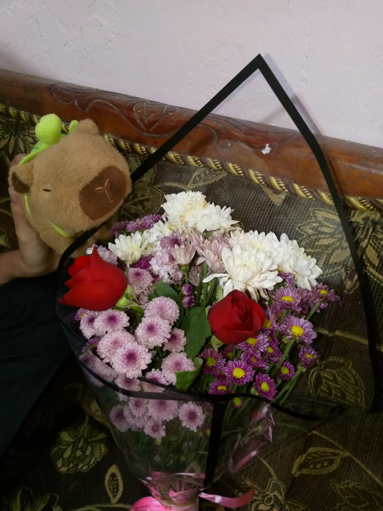
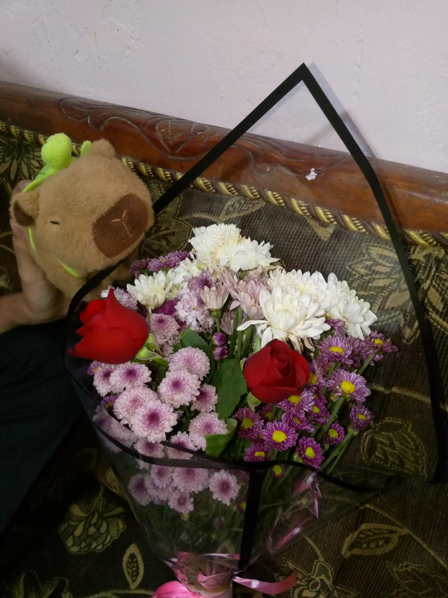

Cooking Time 🍳
Malam itu begitu hangat dan menyenangkan, saat kita masak bareng di rumah. Tawa dan canda mengisi setiap sudut dapur, aroma masakan yang baru dibuat menambah kehangatan momen. Bersama kamu dan Niko Dandi, setiap langkah di dapur terasa penuh keseruan, dari bahan-bahan yang diolah sampai makanan yang akhirnya tersaji. Foto-foto ini menangkap kebahagiaan sederhana itu—momen yang lucu, hangat, dan manis, yang membuat malam itu begitu spesial. Galeri memory ini menjadi tempat menyimpan detik-detik kecil yang kini selalu mengingatkan aku pada kebersamaan dan kehangatan yang tak tergantikan


Photobooth 📸
Waktu kita bersenang-senang di photobooth, setiap momen terasa begitu hidup dan penuh tawa. Dari pose konyol sampai senyum manis yang spontan, semua tertangkap di setiap frame. Foto-foto ini bukan sekadar gambar, tapi potongan kenangan yang mengingatkan betapa menyenangkannya waktu yang kita habiskan bersama. Setiap ekspresi, setiap canda, kini tersimpan di galeri memory ini, menjadi bukti bahwa momen sederhana pun bisa menjadi sangat istimewa ketika diisi dengan kebahagiaan dan kehangatan bersamamu


Hari Spesial 💖
Setiap hari spesial yang kita lalui bersama selalu meninggalkan jejak manis di hati. Dari tawa yang tak terlupakan, momen kecil yang membuat bahagia, hingga rasa hangat saat berada di dekatmu—semua tersimpan di galeri memory ini. Foto-foto ini bukan hanya gambar, tapi kenangan nyata tentang hari-hari yang penuh cinta, perhatian, dan kebahagiaan sederhana. Hari spesial itu mengajarkan aku bahwa momen bersama orang yang kita sayangi selalu istimewa, dan setiap detik yang kita habiskan bersama selalu pantas untuk dikenang selamanya


Fresh Flowers 💐
Waktu aku memberikanmu fresh flowers itu, bukan sekadar bunga biasa. Setiap kelopaknya aku pilih dengan hati, setiap warnanya aku bayangkan senyummu. Bunga itu adalah cara kecilku untuk mengatakan ‘aku sayang kamu’, meski kata-kata terkadang tak cukup. Kini, setiap kali melihat foto momen itu, aku bisa mengingat hangatnya senyummu, detik-detik sederhana yang penuh cinta, dan rasa bahagia yang tak tergantikan. Galeri memory ini menyimpan bukan hanya gambar, tapi juga perasaan dan kenangan yang selalu ingin aku abadikan bersamamu
 


Waktu Main Ke Rumah Dedee 🏡
Waktu aku main ke rumahmu, setiap detik terasa begitu hangat dan menyenangkan. Dari tawa kita yang ringan, cerita-cerita kecil yang membuat senyum, hingga momen sederhana yang kadang terlupakan tapi begitu berarti—semua tersimpan indah di hati. Foto-foto ini bukan sekadar gambar, tapi kenangan nyata tentang betapa bahagianya aku berada di dekatmu. Setiap sudut rumahmu, setiap canda yang kita bagi, kini menjadi bagian dari galeri memory kita, mengingatkan bahwa momen sederhana bersama orang yang kita sayang bisa menjadi begitu berkesan dan hangat